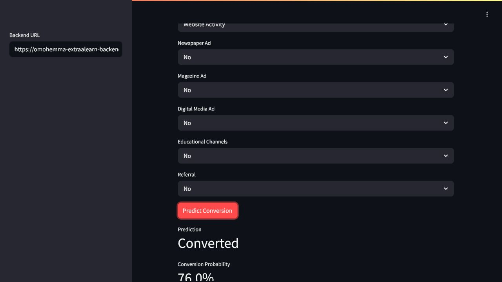

Python EDA, ML, deep learning, GenAI, and deployment.
RAG, neural networks, and applied ML deployment.
Healthcare, energy, education, finance, and food delivery.
GitHub links, screenshots, e-portfolio, and live app evidence.
ls ./flagship
Flagship projects
Start here. These three projects best represent the AI/ML engineering direction: grounded GenAI, deep learning, and deployable prediction systems.
01
GenAI / RAG
Medical Assistant
A medical-manual retrieval augmented generation prototype combining document preprocessing, prompt engineering, LLM reasoning, and response grounding for healthcare question answering.
- RAG, LLM prompting, NLP preprocessing, and answer retrieval.
- Shows trusted-context thinking for high-stakes information workflows.
02
Deep Learning
ReneWind
A wind turbine failure prediction project focused on predictive maintenance, classification, neural network modeling, activation functions, and model evaluation.
- Applies neural networks to reduce downtime risk in renewable energy operations.
- Shows EDA, preprocessing, classification framing, and evaluation discipline.
03
Deployment
ExtraaLearn
A lead conversion prediction capstone that selects a tuned AdaBoost model and packages the scoring workflow with Flask backend and Streamlit frontend deployment.
- Test metrics: 86.4% accuracy, 75.8% recall, and 76.9% F1.
- Live app smoke test returned Converted with 76.0% probability.
find ./projects -maxdepth 1
Complete project index
Each card gives the problem, methods, and fastest proof path for reviewers.
healthcareGenAI
Medical Assistant
Medical-manual RAG prototype for question answering with LLMs, prompt engineering, retrieval, and NLP preprocessing.
- focus
- Trusted-context answer generation
- skills
- RAG, LLMs, prompts, preprocessing
energyNeural Networks
ReneWind
Wind turbine failure prediction with EDA, preprocessing, classification, activation functions, and neural network modeling.
- focus
- Predictive maintenance
- skills
- Deep learning, classification, evaluation
educationDeployment
ExtraaLearn
Lead conversion prediction with tuned AdaBoost, Flask scoring backend, Streamlit frontend, and deployment-oriented packaging.
- focus
- Sales prioritization
- skills
- AdaBoost, model tuning, Flask, Streamlit
public sectorAdvanced ML
EasyVisa
Visa approval prediction using ensemble learning, bagging, boosting, stacking, hyperparameter tuning, and business insight generation.
- focus
- Approval likelihood prediction
- skills
- Ensembles, tuning, model comparison
bankingClassical ML
Personal Loan Campaign
Bank campaign targeting with EDA, preprocessing, decision trees, model evaluation, model improvement, and business recommendations.
- focus
- Customer targeting
- skills
- Decision trees, evaluation, recommendations
food deliveryPython EDA
FoodHub
Food delivery analysis with Python, NumPy, Pandas, Seaborn, univariate and bivariate EDA, and business recommendations.
- focus
- Demand and customer experience
- skills
- Python, Pandas, Seaborn, EDA
python summarize_skills.py
Engineering signal
The portfolio shows the full path from analysis to modeling, evaluation, and usable AI interfaces.
GenAI and NLP
RAG, LLM prompting, retrieval workflows, document preprocessing, medical assistant prototyping.
Machine Learning
Classification, decision trees, bagging, boosting, stacking, model evaluation, hyperparameter tuning.
Deep Learning
Neural networks, activation functions, supervised classification, predictive maintenance framing.
Delivery
Python, NumPy, Pandas, Seaborn, business recommendations, Flask, Streamlit, Docker packaging.
open ./proof
Proof and packaging
Official program proof, public code, live deployment, screenshots, and dataset notes are grouped for quick review.
Primary links

Live app verified
ExtraaLearn returned a Converted prediction with 76.0% conversion probability during smoke testing.
Dataset note
ExtraaLearn dataset permission has been granted for public portfolio showcasing. Other course datasets remain private unless separate permission is received.
Trained model artifacts remain local because they can be regenerated from the notebook.